The moments
you'll want to keep.
From growing families to proud seniors and game-day memories, let's hold on to the good stuff.
Meet Hannah & get in touchHannah Grace Photography
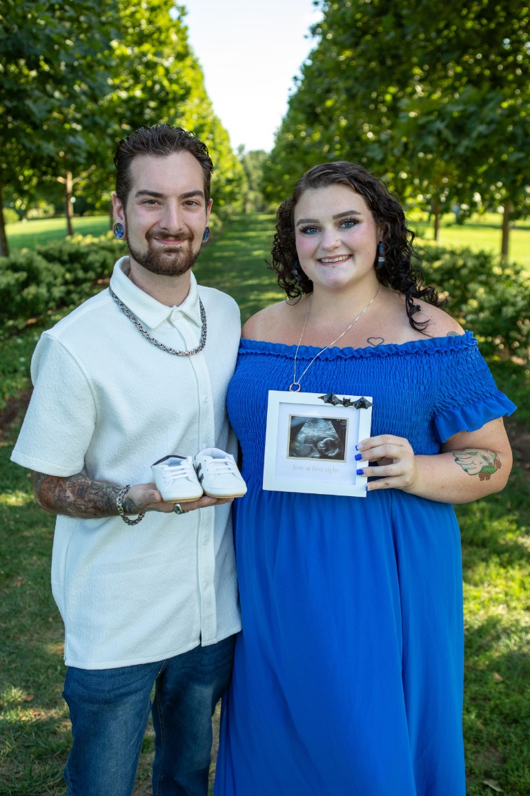
A FEW FAVORITE FRAMES
Life, as it happens.
Real people. Real moments.
Worth remembering.
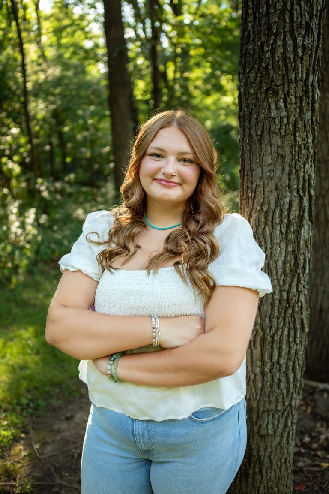
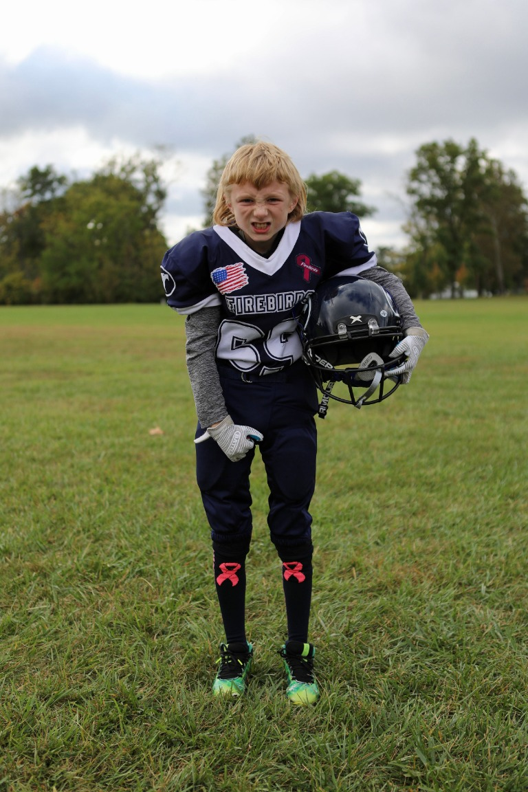
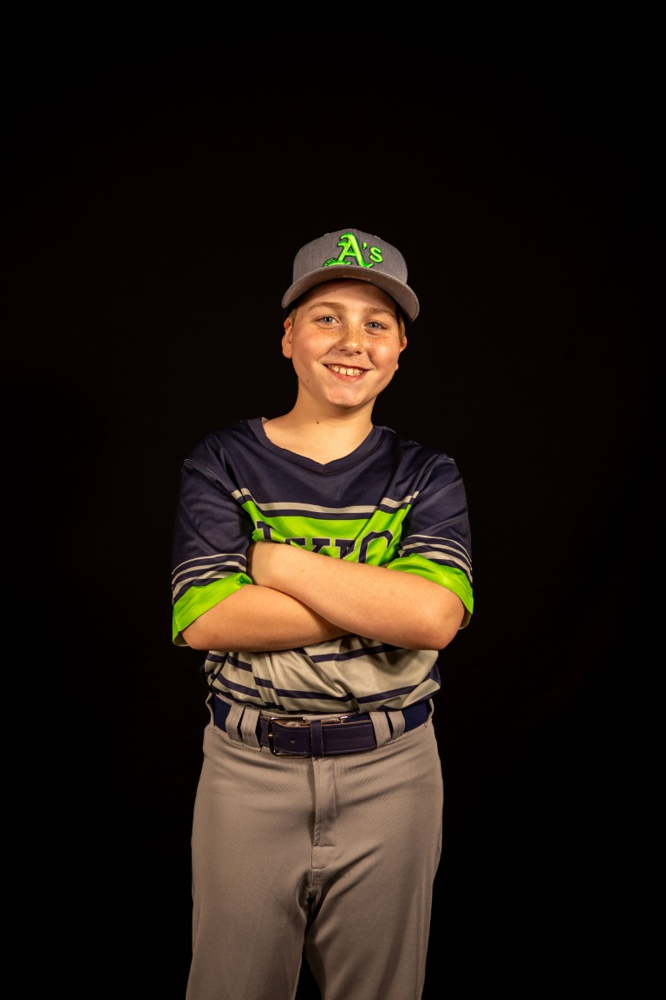
Family & milestones
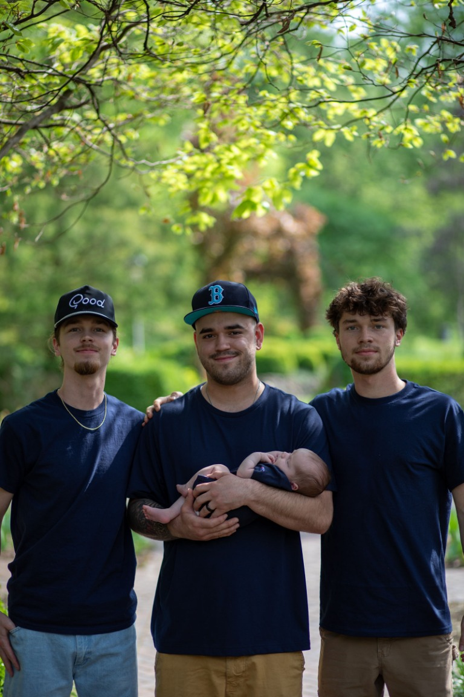
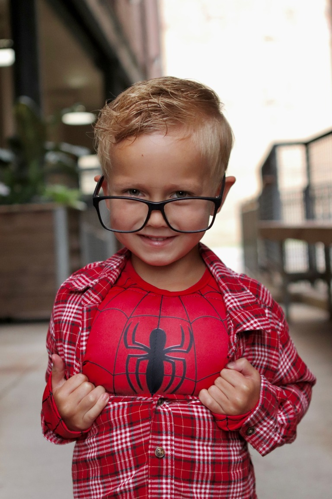
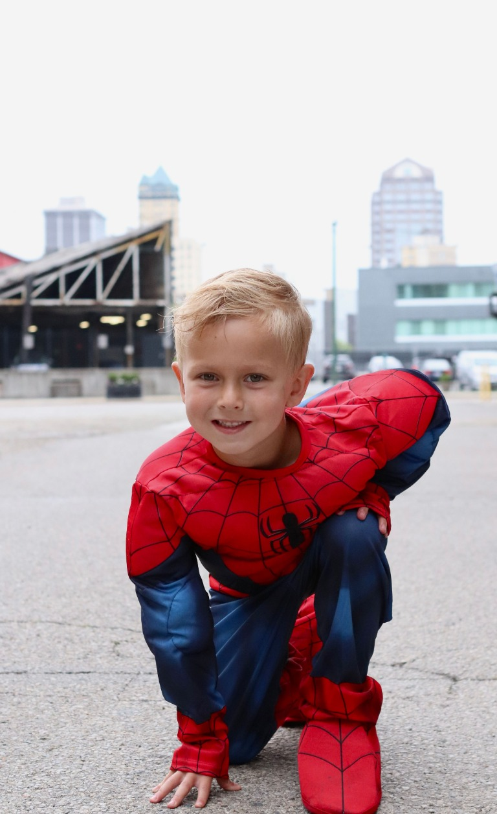
Senior year
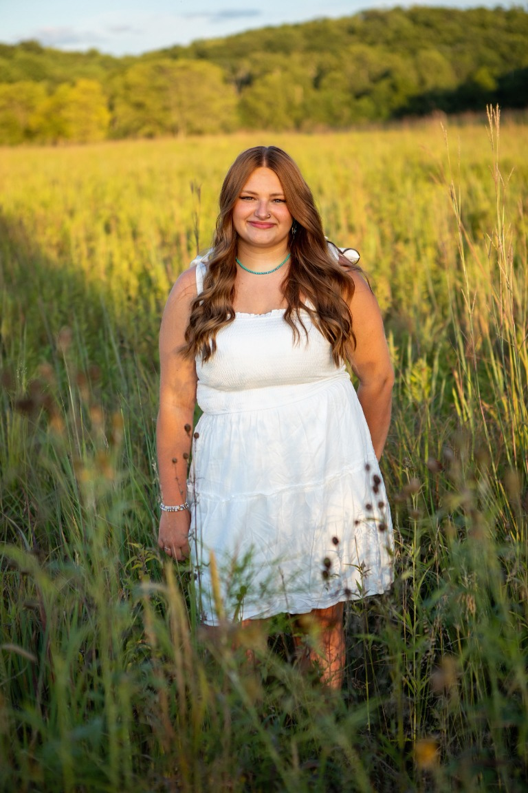
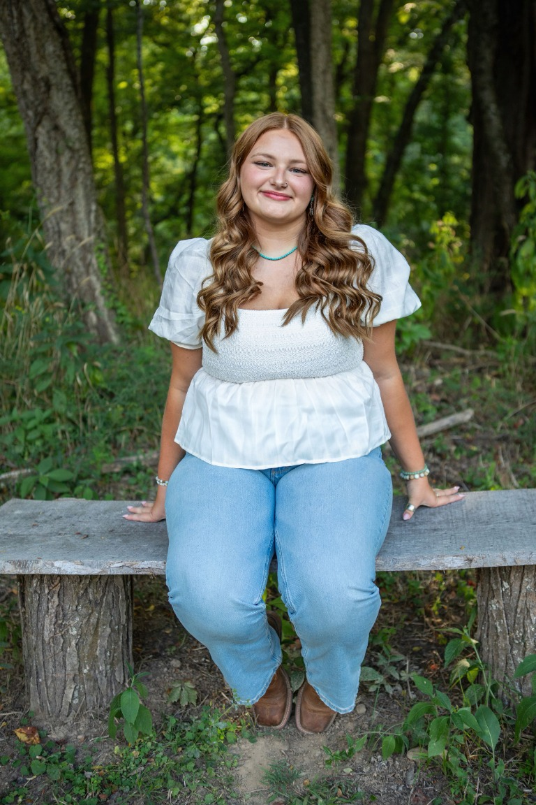
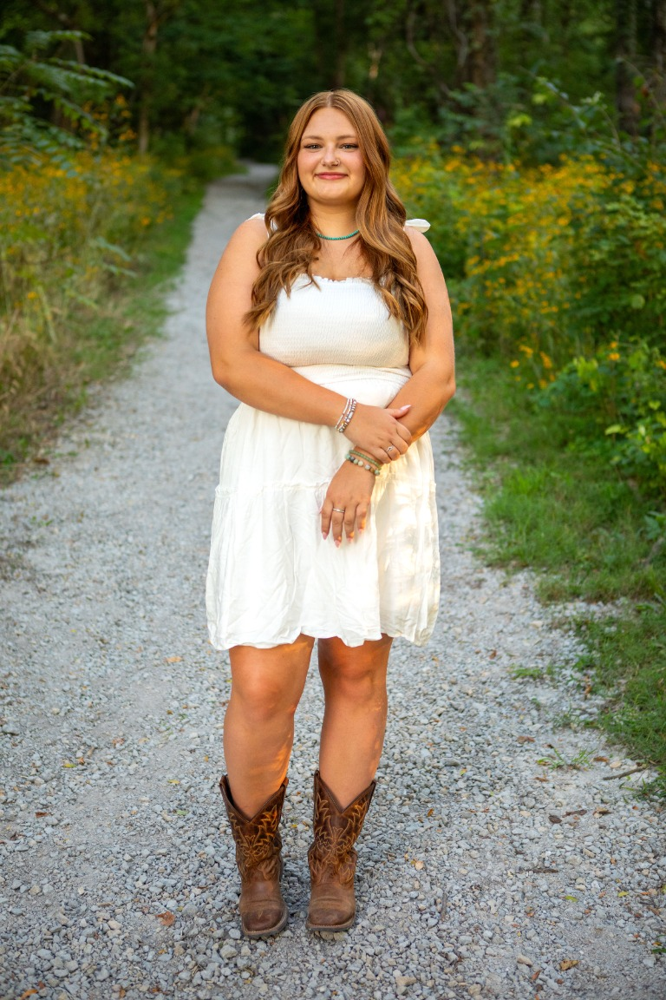
Under the lights & in the field
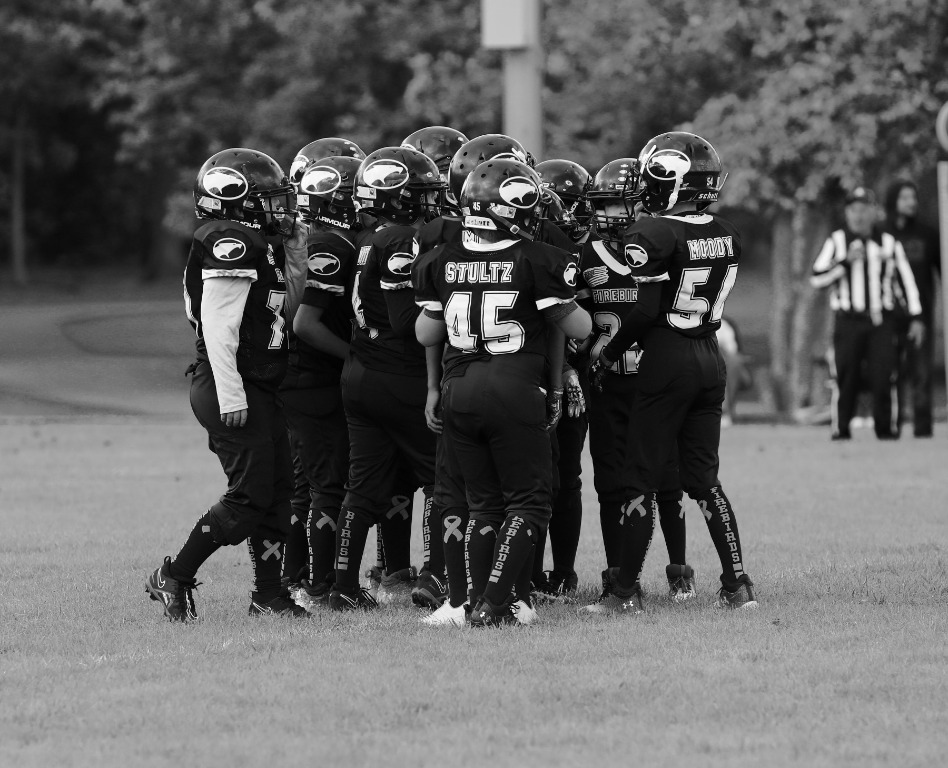
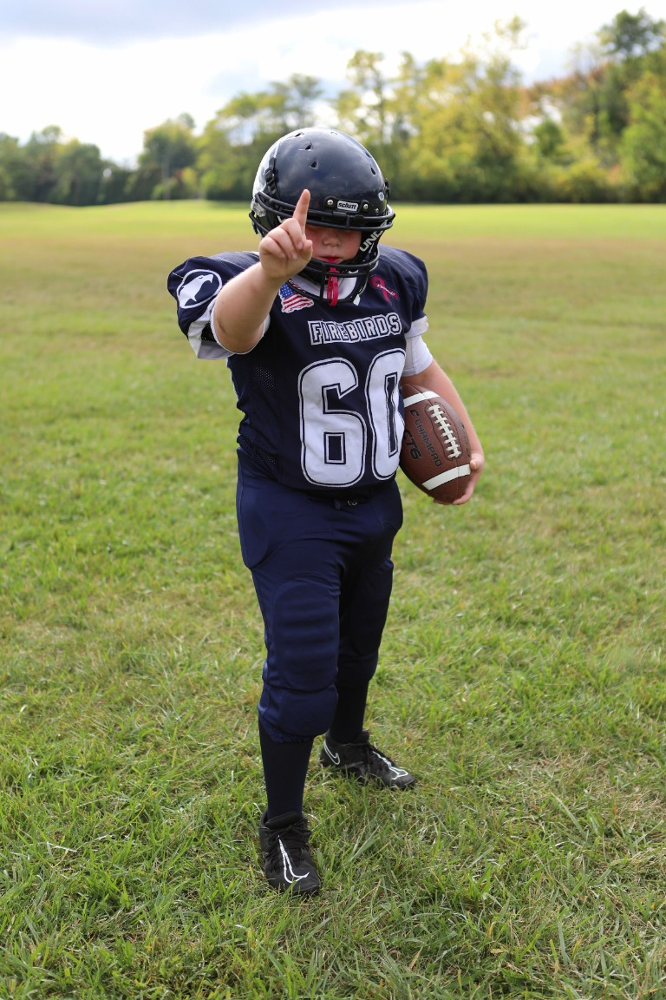
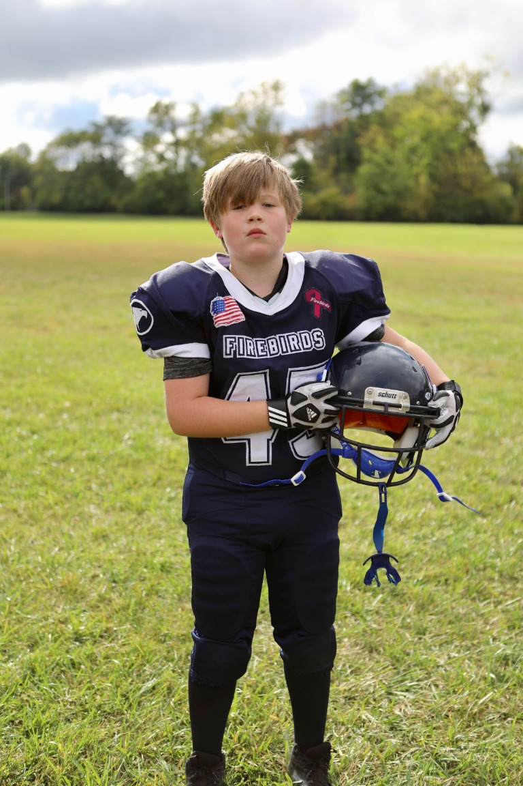
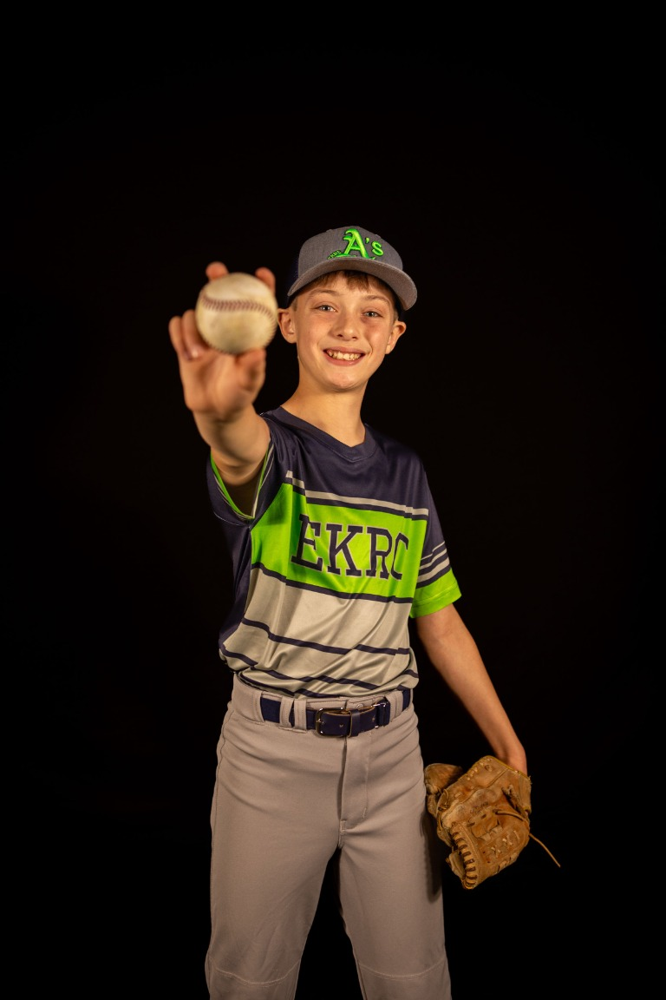
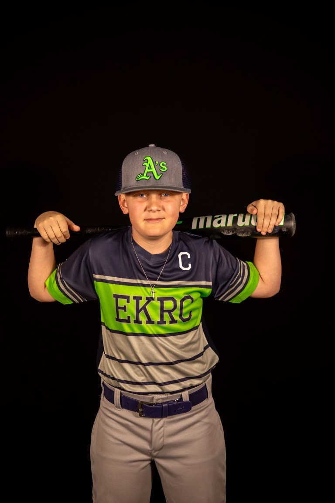
THE PHOTOGRAPHER
A little about Me.
Photography has been a creative passion of mine since I was in 8th grade. I mainly work with digital photography and enjoy photographing seniors, sports, maternity sessions, and other special moments in people's lives.
I like being able to capture someone's personality and create photos that they can look back on and remember. Outside of portraits and events, I also really enjoy photographing nature and finding small details, lighting, and moments that others might overlook. Photography gives me a way to be creative while capturing moments that are meaningful to me and to the people I photograph.
LET'S TALK PHOTOS
Have a session in mind?
Call or text Hannah to start planning your session.
(937) 993-6228